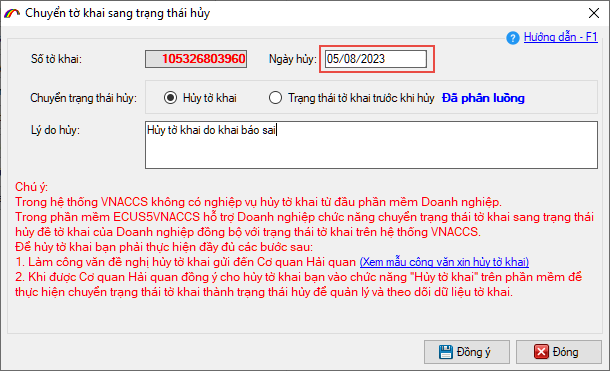
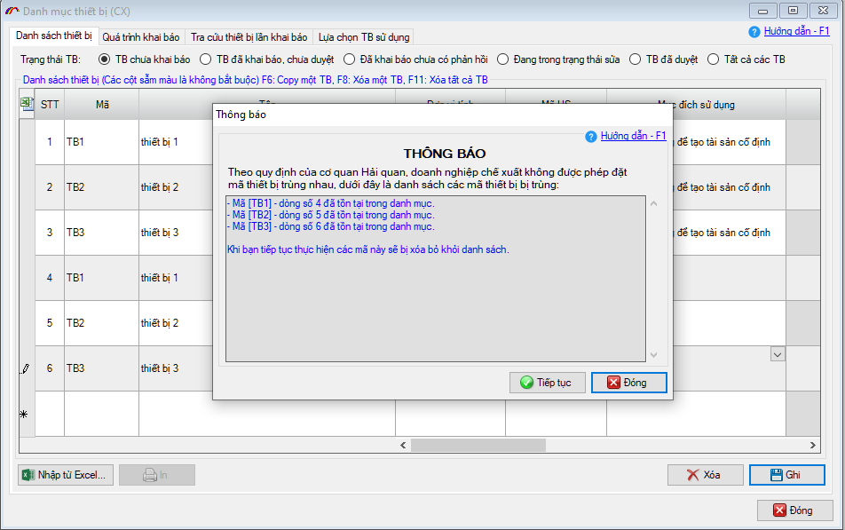
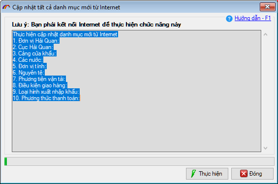
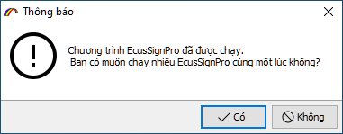
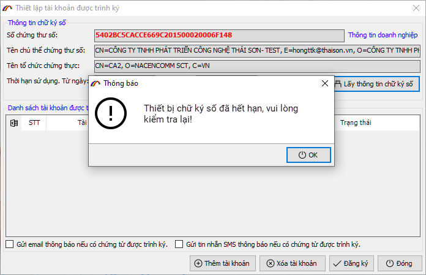
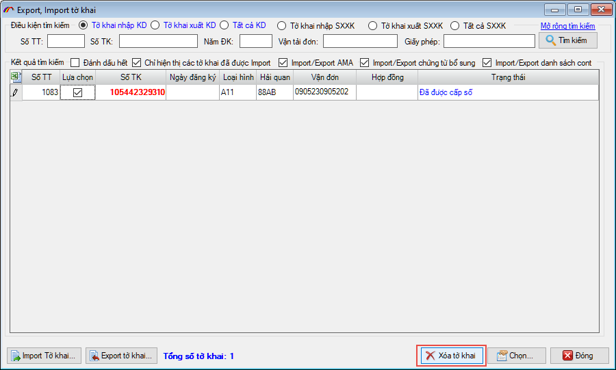
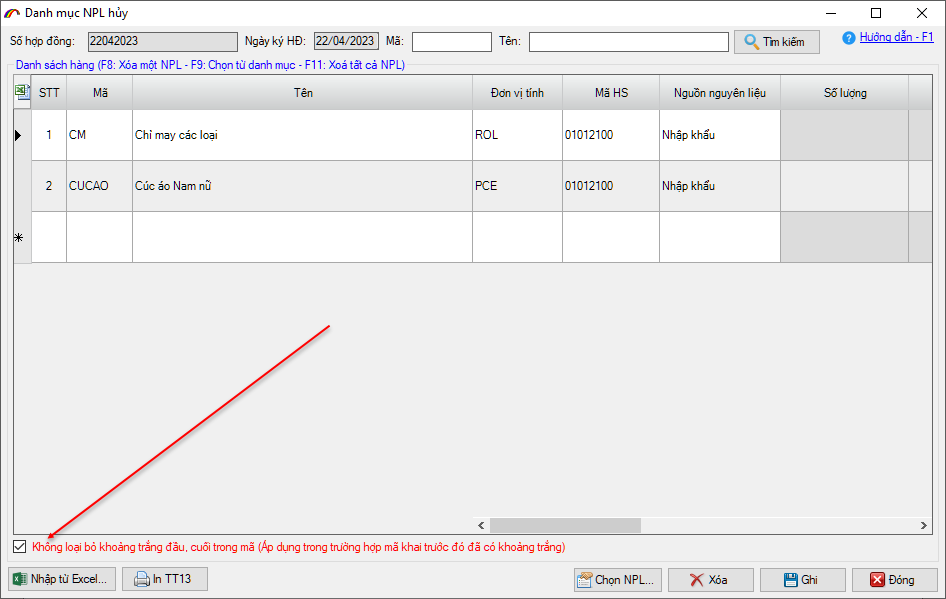
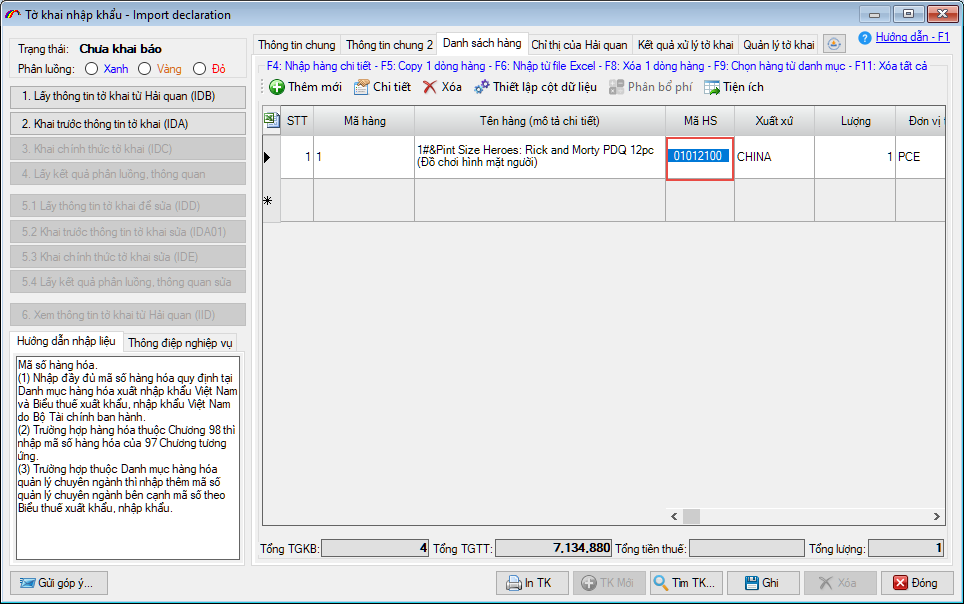

NHỮNG THAY ĐỔI TRÊN BẢN ECUS5VNACCS 2018
(Phiên bản update 16/07/2023)
Phần mềm ECUS5VNACCS2018 - Ngày phát hành 08/08/2023
Phiên bản cập nhật ngày 16/07/20232 được phát hành ngày 08/08/2023 bổ sung, sửa đổi các chức năng sau:
- 1. Ghi nhật ký chuyển trạng thái Hủy tờ khai.
Phần mềm thực hiện ghi lại nhật ký ngày, giờ doanh nghiệp chuyển trạng thái tờ khai về chế độ HỦY (giúp doanh nghiệp kiểm tra lại ngày, giờ tờ khai VNACCS được chuyển trạng thái "HỦY")

- 2. Kiểm tra trùng dữ liệu đã có khi import danh sách thiết bị (chế xuất)
Khi doanh nghiệp thực hiện import danh sách thiết bị (chế xuất) từ file excel, khi nhấn nút Ghi để lưu thông tin danh sách thiết bị, phần mềm sẽ kiểm tra và thông báo tất cả các mã đã tồn tại để doanh nghiệp tiện sửa lại (thay vì báo từng mã như hiện tại).

- 3. Thay đổi cơ chế cập nhật danh mục từ internet:
Sau khi cập nhật danh mục từ internet (menu Danh mục / Cập nhật tất cả danh mục mới từ internet) người dùng có thể chọn được luôn các danh mục mới mà không cần phải đóng / mở lại phần mềm.

- 4. Cảnh báo khi người dùng mở nhiều cửa sổ ECUSSignPro.
Khi ứng dụng ECUSSignPro đang chạy mà người dùng tiếp tục mở từ shortcut, phần mềm sẽ đưa ra cảnh báo để không mở thêm nhiều cửa sổ.

- 5. ECUSSignPro đưa ra cảnh báo khi người dùng chọn CKS hết hạn.
Khi người dùng chọn phải thiết bị chữ ký số đã hết hạn, phần mềm sẽ đưa ra cảnh báo tránh việc ký xong mà không khai báo được tờ khai, chứng từ:

- 6. Cho phép xóa các tờ khai import đã khai báo tạm.
Khi người dùng sử dụng chức năng import tờ khai tờ excel hoặc XML, các tờ khai này đã khai báo tạm (IDA/EDA) và đã quá hạn 7 ngày, phần mềm sẽ cho phép xóa khỏi danh sách:

- 7. Bổ sung lựa chọn tự động cắt khoảng trắng trong Mã khi khai báo phụ kiện.
Phần mềm bổ sung lựa chọn cho phép tự động cắt dấu cách trắng trước và sau trường Mã NPL, SP, HS code khi khai báo phụ kiện Sửa, hủy danh mục nguyên phụ liệu, sản phẩm HĐGC:

- 8. Tự động cắt khoảng trắng trước và sau trường HS trên tờ khai.
Phần mềm sẽ tự động cắt khoảng ký tự trắng trong trường HS code trong trường hợp người dùng nhập (import từ excel):

- 9. Ngoài ra, còn có nhiều mục sửa đổi bổ sung khác nhằm nâng cao hiệu suất và tạo sự thuận lợi cho người dùng...
...
Bản quyền © thuộc về Công ty TNHH Phát triển công nghệ Thái Sơn